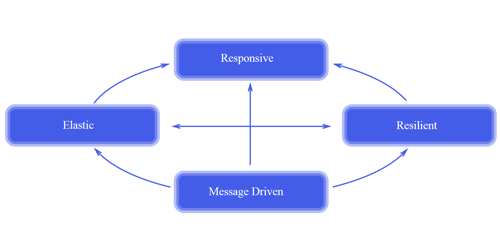
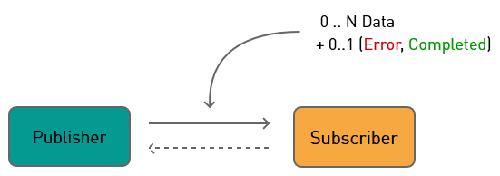
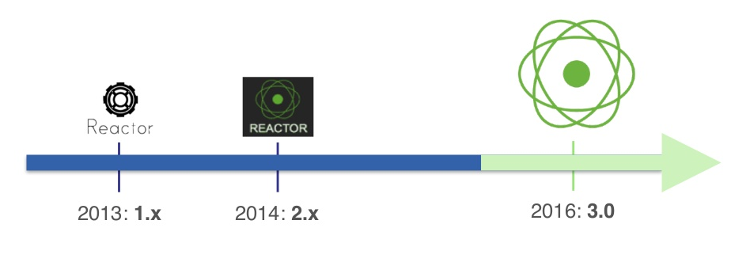
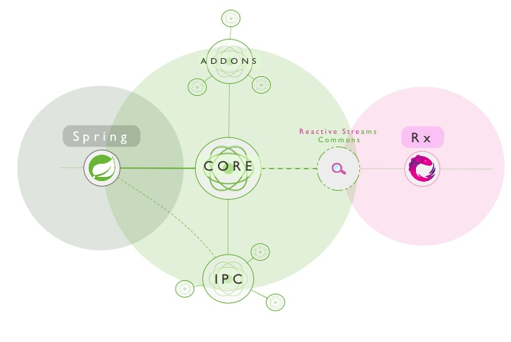
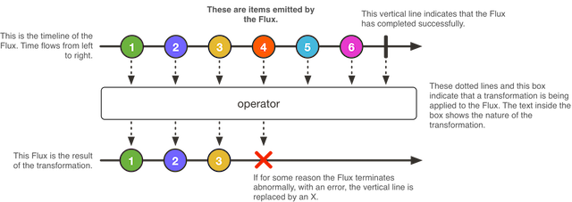
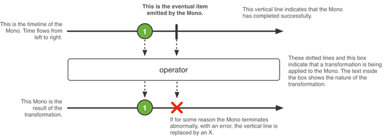
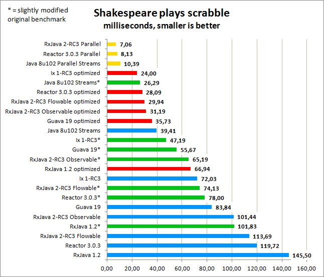
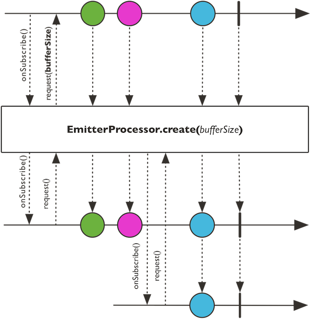

reactive programming with spring reactor
Overview
- Stephane Maldini @ JOIN
- The new normal that is not new
- The Reactive Manifesto
- Latency & Blocking
- The Contract
- Reactive Types
- Testing & Debuging
- Other Changes
- RxJava
- Spring Framework 5
- Conclusion & Do It Yourself
Stephane Maldini @ JOIN 2016
On 5 October 2016, we had the pleasure to welcome Stephane Maldini at our JOIN event.

A multi-tasker eating tech 24/7, Stephane is interested in cloud computing, data science and messaging. Leading the Reactor Project, Stephane Maldini is on a mission to help developers create reactive and efficient architectures on the JVM and beyond. He is also one of the main contributors for Reactive support in the upcoming Spring 5 framework, which can be seen as the new standard for reactive applications in the Java world.
The new normal that is not new
It has been around for 30-40 years and boils down to Event-Driven Programming What is new is “reactive motion bound to specification”, this means that reactive programming is based on something solid, a specification and no longer some functional concepts. Namely the Reactive Manifesto.
Because of this specification, Spring found it the right time to start with Reactor as they could now build something, which would be able to work and where it was clear what people could expect.
The Reactive Manifesto

According to the manifesto, reactive systems are
- Responsive: respond in a timely manner if at all possible, responsiveness means that problems can be detected quickly and dealt with accordingly.
- Resilient: remain responsive in the event of failure, failures are contained with each component isolating components from each other.
- Elastic: stay responsive under varying workload, reactive systems can react to changes in the input rate by increasing or decreasing the resources allocated to services.
- Message Driven: rely on asynchronous message-passing to establish a boundary between components that ensures loose coupling, isolation and location transparency.
This boundary also provides the means to delegate failures as messages.
Systems built as reactive systems are thus more flexible, loosely-coupled and scalable. This makes them easier to develop and to allow changes. They are significantly more tolerant of failure and when failure does occur they meet it with elegance rather than disaster.
Latency
Latency is also a real issue, the real physical distance of various components and services becomes more important with cloud based systems. This is also a very random number which is difficult to predict because it can depend on network congestion. With Zipkin, you can measure this latency.
The same latency can also exist within an application - between the different threads - although the impact will be less severe than between various components.
Something needs to be done when latency becomes too big of an issue, especially if the receiver can not process enough. Too much data will fill up the buffer and can result, with an unbounded queue, to the infamous OutOfMemoryException(). While you won’t run out of memory with a circular buffer, you risk losing messages as the oldest ones get overwritten.
Blocking
One way to prevent out of memory exceptions is to use blocking.
But this can be a real poison pill: when a queue is full, it will block a thread and as more and more queues get blocked your server will die a slow death.
Blocking is faster and has better performance, than reactive, but reactive will allow for more concurrency. Concurrency is important if you have a microservice based architecture, as there you typically need to be more careful and more exact when allocating resources between services.
As in, by being more concurrent you can save a lot of money when using cloud and microservices.
Contract
Reactive is non-blocking and messages will never overflow the queue, see for the standard definition http://www.reactive-streams.org/.
Created by Pivotal, Typesafe, Netflix, Oracle, Red Hat and others.
The scope of Reactive Streams is to find a minimal set of interfaces, methods and protocols that will describe the necessary operations and entities to achieve the goal—asynchronous streams of data with non-blocking back-pressure. With back-pressure, a consumer which can not handle the load of events sends towards it, can communicate this towards the upstream components so these can reduce the load. Without back-pressure the consumer would either fail catastrophically or drop events.

This contract defines to send data 0 .. N.
Publisher is an interface with a subscribe() method.
Subscriber has 4 callback methods:
onSubscribe(), onNext() (which can be called 0 to N times), onComplete() and onError().
The last two signals (complete and error) are terminal states, no further signals may occur and the subscriber’s subscription is considered cancelled.
What is important is the reverse flow and the back-pressure.
After subscribing, the subscriber gets a subscription which is a kind of 1 on 1 relationship between the subscriber and the publisher with 2 methods: request and cancel.
- Request: this is the more important one, with this method the subscriber will ask the publisher to send x messages (and not more), a so called
pull. - Cancel: the subscription is being cancelled.
Spring Reactor focuses on the publisher side of the reactive streaming, as this is the hardest to implement and to get right. It provides you with the tools to implement publishers in a back-pressure way.
The publisher is a provider of a potentially unbounded number of sequenced elements, publishing them according to the demand received from its Subscriber(s).
The Reactive Streams specification has been adopted for java 9.
DIY Reactive Streams
Implementing a Reactive Stream framework yourself is very hard to do, for Stephane Maldini this is the 4th or 5th attempt. For Davik Karnok, the tech lead of RxJava, it is attempt 7 or 8. The main difficulty is to make it side effect free.
For example:
{{< highlight java >}}
Publisher
Note that a publisher is returned instead of directly returning the entity. By doing so it does not block the subscribers when querying for the user and the publisher will produce the user when ready.
But by using the specification as is, your publisher might produce 0, 1 or N users, returning an Iterable as result.
This is not really practical to work with, as most of the time we are only interested in a single user and not a stream of multiple results.
When you would be building the method findOneUser() you also would not want to return an Iterable but just a single User.
Also you will have to implement a subscriber to define the action to perform when the result is available.
{{< highlight java >}}
rick.subscribe(new Subscriber
Implementing this subscriber would not be that hard, because the specification has been made so that all complexity lies at the publishers side.
Another issue is that you can only subscribe on the publisher, there are no other methods available like map, flatmap, …
The other point is that when designing your own API you will also have to deal with the following issues:
- Should work with RS TCK (otherwise it might not work with other libraries as well)
- Address reentrance
- Address thread safety
- Address efficiency
- Address state
- For Many-To-One flows, implement your own merging operation
- For One-To-Many flows, implement your own broadcasting operation
- …
This is all very hard to do yourself.
3 Years to Mature
It took Spring Reactor 3 years to mature.

2.0 was not side effect free - also existential questions were raised around the project. At the same time Spring evolved and microservices became the norm.
Spring needs to work nicely with these microservices, concurrency is important, can Reactor not be used for that?
With 3.0 the team wanted to focus on microservices, take some ideas from Netflix OSS and implement these in a pragmatic way. Actually Reactor 3 was started as 2.5, but so many new features were added that the version had to be changed as well in order to reflect this.
Since 3.0 Spring Reactor has been made more modular and consists of several components:

- Core is the main library. Providing a non-blocking Reactive Streams foundation for the JVM both implementing a Reactive Extensions inspired API and efficient message-passing support.
- IPC: back-pressure-ready components to encode, decode, send (unicast, multicast or request/response) and serve connections. Here you will find support for Kafka and Netty.
- Addons: Bridge to RxJava 1 or 2 Observable, Completable, Flowable, Single, Maybe, Scheduler, and also Swing/SWT Scheduler, Akka Scheduler.
- Reactive Streams Commons is the research project between Spring Reactor and RxJava as both teams had a lot of ideas they wanted to implement. Lots of effort was put in order to create real working, side-effect free operations. Map and Filtering for example are easy, but mergings, like Flatmap are hard to implement side-effect free. Having a proper implementation in the research project for these operations allowed the team to experiment and make it quite robust. This project contains Reactive-Streams compliant operators, which in turn are implemented by Spring Reactor and RxJava. Both the Spring and RxJava teams are very happy with this collaboration and this is still continuing. When a bug gets fixed in Spring Reactor it will also be fixed in RxJava and vice versa.
Everything in Reactor is just reactive streams implementation - which is used for the reactive story of spring 5.
There also exists an implementation for .NET, Reactor Core .NET and one for javascript Reactor Core TypeScript.
Reactive Types
Flux vs Observable

Observable is not implementing Reactive Streams Publisher which means that if you would like to use the Spring 5 save(Publisher<T>) you first have to convert the Observable to a Flowable as you can see in Observable and Flowable.
This was too much noise for the Spring team, they are less dependant on Android developers so they could go all in with Java 8.
Flux is a Reactive Streams Publisher with basic flow operations, where you start from a static method which will describe how the data will be generated, just() is the simplest way
After that you have other operators like Flatmap(), Map(), … to work with that data Some of the method names will be different to RxJava2, but the logic behind these methods has been aligned among RxJava and Spring .
{{< highlight java >}} Flux.just(“red”, “white”, “blue”) .flatMap(carRepository::findByColor) .collect(Result:: new, Result::add) .doOnNext(Result::stop) .subscribe(doWithResult);
Interface CarRepository {
Flux
{{< / highlight >}} This Flux will retrieve all cars which match the color “red” then those with the color “white” and finally “blue”. So instead of just three elements, after this Flatmap we are going to have a lot more elements. This is all handled with back-pressure in mind, for example when the flatmap is busy merging data we will not ask for extra records
If the Repository implements Flux as a method signature, it will be picked up automatically as a reactive repository. This support for Flux will be part of the whole of Spring 5. Spring Data, Spring Security, Spring MVC, … are all good candidates who will have this kind of support.
Mono

None is like a flux, but will return at most 1 result, so it does have less methods.
{{< highlight java >}} Mono.delayMillis(3000) .map(d -> “Spring 4”) .or(Mono.delayMillis(2000).map(d -> “Spring 5”)) .then(t -> Mono.just(t + ” world”)) .elapsed() .subscribe()
{{< / highlight >}} This Mono will wait for 3 seconds on the “call” to Spring 4 or 2 seconds on that of Spring 5. The fastest result will be the one which will be outputted.
The Mono has as advantage over an Observable Future of Java 8 that a Mono will only be triggered if you subscribe to it.
While with an Observable the call to send() will execute the operation.
Testing
Block() exists for very specific use cases and for testing.
Never, ever use this in production, as is it blocks your call, which does infer with the Reactive non-blocking statements. ;-)
{{< highlight java >}} Mono.delayMillis(3000) .map(d -> “Spring 4”) .or(Mono.delayMillis(2000).map(d -> “Spring 5”)) .then(t -> Mono.just(t + ” world”)) .elapsed() .block()
{{< / highlight >}}
You can also make use of Stepverifier to test Flux, Mono and any other kind of Reactive Streams Publisher.
{{< highlight java >}} @Test public void expectElementsWithThenComplete() { expectSkylerJesseComplete(Flux.just(new User(“swhite”, null, null), new User(“jpinkman”, null, null))); }
{{< / highlight >}}
Use StepVerifier to check that the flux parameter emits a User with “swhite” username and another one with “jpinkman” then completes successfully.
{{< highlight java >}}
void expectSkylerJesseComplete(Flux
{{< / highlight >}}
Debug
When you use reactive libraries you will quickly realize that step debugging is hard especially when you try to read your stacktraces, there are a lot of recursive calls taking place.
Before you invoke your operations you can enable an, expensive, debug mode. {{< highlight java >}} Hooks.onOperator(op -> op.operatorStacktrace());
try { Mono.just(“a”) .map(d -> d) .timestamp() . …
} catch (Exception e) { e.printStacktrace() }
{{< / highlight >}}
When an exception is returned it will contain the exact operation that failed and the backtrace to that operation.
You must enable this Hooks.onOperator before the operations you want to track.
More cool stuff
ParallelFlux
If you want to stress test your CPU you can use ParallelFlux which will spread the workload in concurrent tasks when possible.
{{< highlight java >}} Mono.fromCallable( () -> System.currentTimeMillis() ) .repeat() .parallel(8) //parallelism .runOn(Schedulers.parallel()) .doOnNext( d -> System.out.println(“I’m on thread “+Thread.currentThread()) ). .sequential() .subscribe()
{{< / highlight >}} This basically avoids that you have to write flatMap(), where after the parallel(x) you will have exactly x number of Rails or Flux. Afterwards you can merge these back into a Flux with sequential().
A nice feature is that it keeps the code more readable with everything on a single indentation level.
But the cool part is that it is also very performant, with parallel, Reactor is very close to the bare metal of what the JVM can do as you can see in the below comparisation:

https://twitter.com/akarnokd/status/780135681897197568
Bridge Existing Async code
To bridge a Subscriber or Processor into an outside context that is taking care of producing non concurrently, use Flux.create(), Mono.create(), or FluxProcessor.connectSink().
{{< highlight java >}}
Mono
emitter.setCancellation(() -> client.removeListener(listener));
});
{{< / highlight >}}
This create() allows you to bridge 1 result, which will be returned somewhere in the future, to a Mono.
If you add a Kafka call, for example, where they have this callback so one can return onSuccess and onError you can use Mono.create():
see Reactor Kafka where this is used a lot.
Also exists for Flux of N items but it’s tougher and more dangerous as you must explicitly indicate what to do in the case of overflow; keep the latest and risk losing some data or keep everything with the risk of unbounded memory use. ¯\(ツ)/¯
Create Gateways to Flux and Mono
There also exist some options to bridge the synchronous world with the Flux and the Mono.
Like for example the EmitterProcessor which is a signal processor.

{{< highlight java >}}
EmitterProcessor
{{< / highlight >}}
But you also have:
- ReplayProcessor, a caching broadcaster.
- TopicProcessor, an asynchronous signal broadcaster
- WorkQueueProcessor, which is similar to the TopicProcessor but distributes the input data signal to the next available Subscriber.
These are all an implementation of a RingBuffer backed message-passing Processor implementing publish-subscribe with synchronous drain loops.
Optimizations
Operation fusion: Reactor has a mission to limit the overhead in stack and message passing. They distinguish 2 types of optimization:
- Macro Fusion: Merge operators in one during assembly time, for example, if the user does
.merge()-.merge()-.merge()spring reactor is smart enough to put this in a single.merge() - Micro Fusion: Because of the Reactive specification and the asynchronous nature of the response, queues are heavily used, but creating a queue for every request/response is very costly.
Spring Reactor will avoid to create queues whenever possible and short circuit during the lifecycle of the request. They are going to merge the queue from downstream with the one from upstream - hence the name fusion. If the parent is something we can pull (an Iterable or a queue) then Reactor is going to use the parent as a queue, thus avoiding to create a new queue. This is very smart to do - but also very complicated to do yourself, because Spring Reactor has this in place you do not have to deal with this hassle..
A Simpler API
Reactor: a Simpler API, the entire framework just fits in 1 jar: reactor-core jar.
Flux and Mono live in the reactor.com.publisher package, reactor.core.scheduler contains the FIFO task executor.
By default the Publisher and Subscriber will use the same thread.
With publishOn() the publisher can force the subscriber to use a different thread, while the subscriber can do the same with subscribeOn().
For Reactor 3.x there will be more focus on the javadoc, as this has been lagging behind compared to the new features which have been developed.
RxJava
Why Reactor when there’s already RxJava2?
RxJava2 is java 6 while for Reactor the Spring team decided to go all in and focus only on Java 8. This means that you can make use of all the new and fancy Java 8 features.
If you are going to use Spring 5, Reactor might be the better option.
But if you are happy with your RxJava2, there is no direct need to migrate to Reactor.
Spring Framework 5
It will still be backwards compatible. You can just take your Spring 4 application, put Spring 5 behind it and you will be good to go.
But with Spring 5 you will be able to make use of the following new components/ Spring Web Reactive and Reactive HTTP. Which under the hood support Servlet 3.1, Netty and Undertow.
The annotations are still very similar but you just return a Mono, so the User can now be retrieved in a non-blocking way.
{{< highlight java >}}
@GetMapping(“/users/{login}”)
public Mono
{{< / highlight >}}
Conclusion
Spring Reactor is a very interesting framework, after 3 iterations it has matured and gives you a good base to get started with Reactive Streams. With the upcoming support in Spring 5 it will also start to become more mainstream.
Therefore I can see no better way then to get your hands dirty and learn more about Spring Reactor yourself.
- reactive-programming-part-I: Provides you with a clear description of what reactive programming is about and its use cases. But also the different ways about how people have implemented reactive programming (actor model, futures, … ) and more specifially the different frameworks which implement reactive programming in java.
Frameworks like: Spring Reactor, Spring Framework 5, RxJava , Akka, Reactive Streams and Ratpack.
-
reactive-programming-part-II: You will learn the API by writing some code, how to control the flow of data and its processing.
-
reactive-programming-part-III: Here you will focus on more concrete use case and write something useful, but also on some low level features which you should learn to treat with respect.
-
reactor-api-hands-on: This hands-on will help you learn easily the lite Rx API provider by Spring Reactor. You just have to make the unit tests green.
-
On spring.io you can find more interesting blog posts which will give you more background around Spring Reactor and provide you with the resources to start coding.